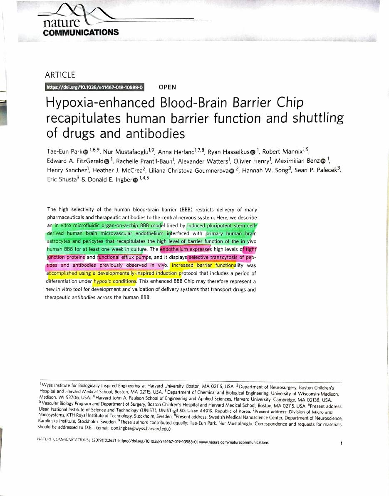
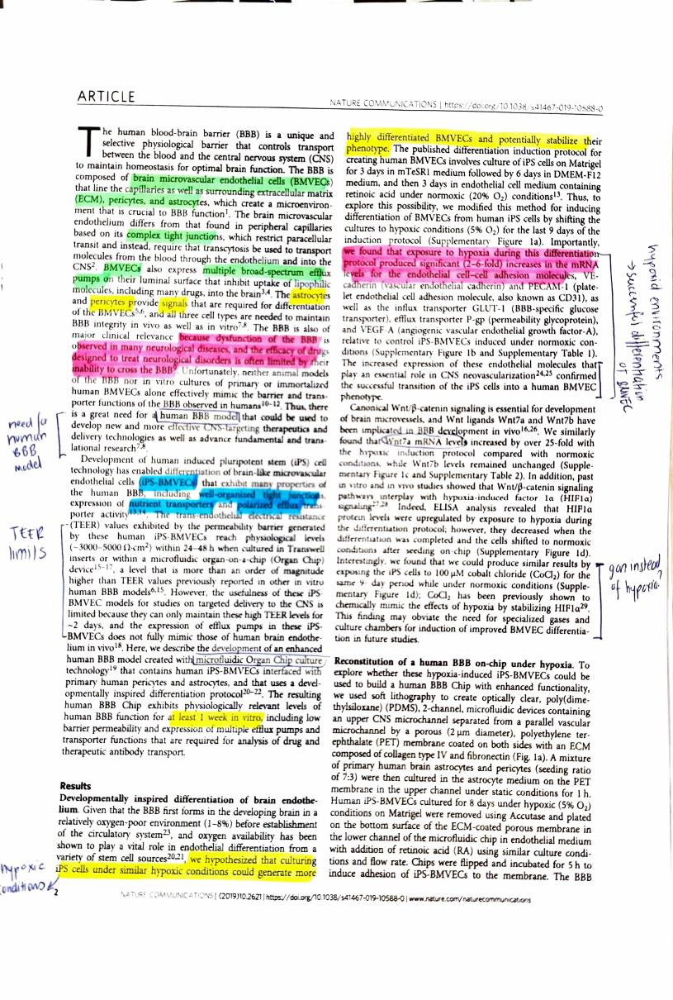
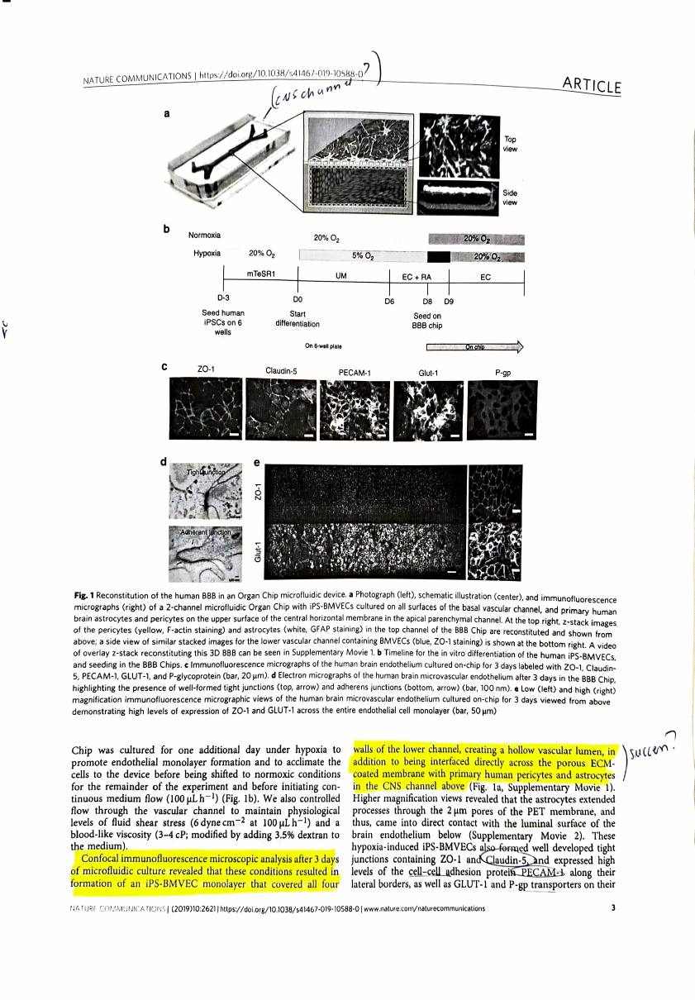
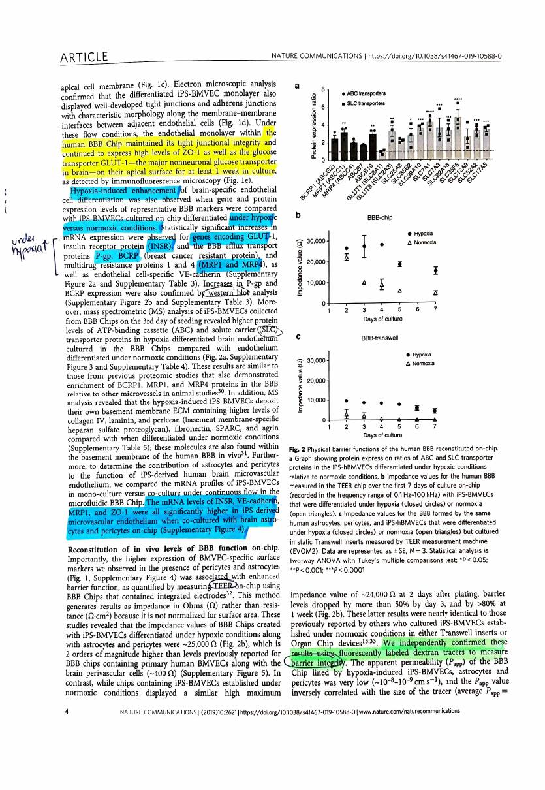
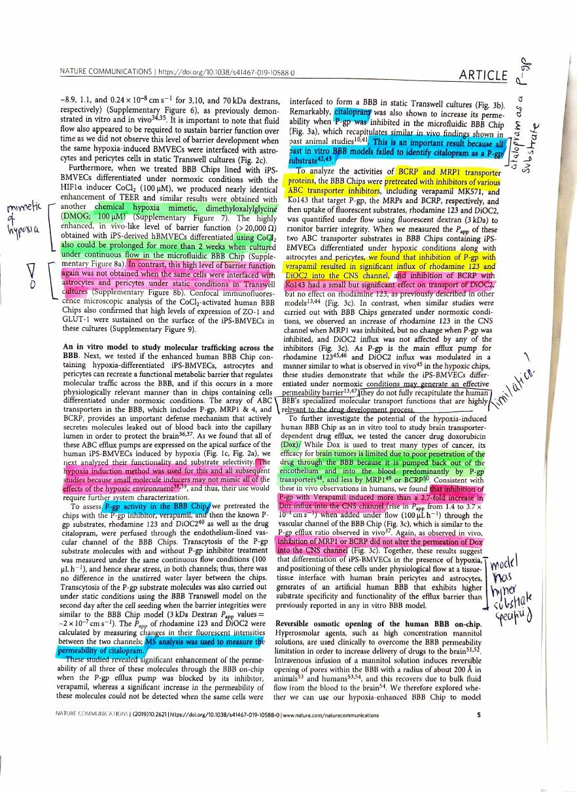
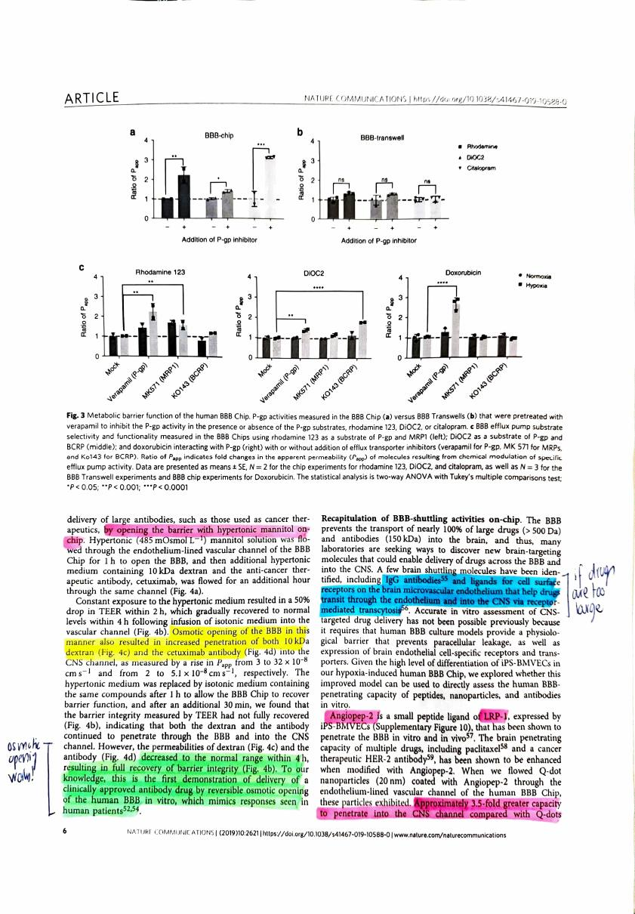
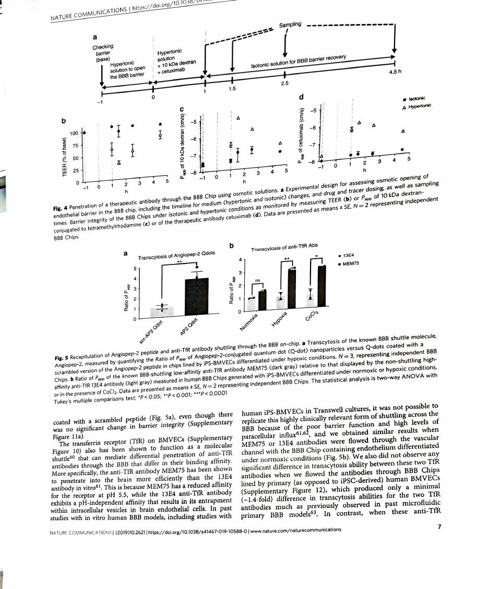
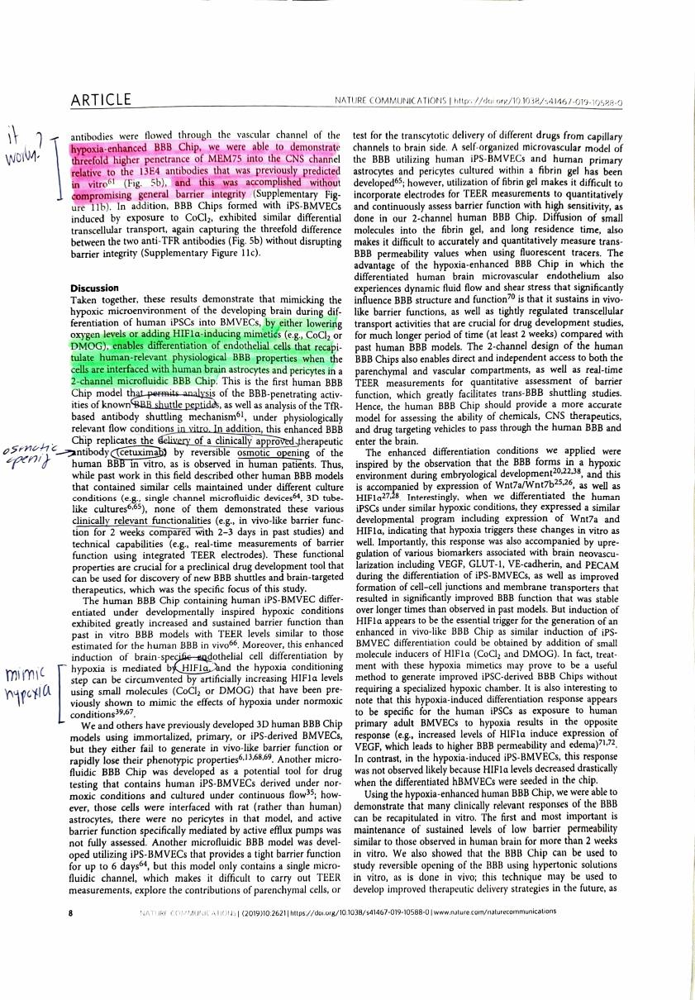
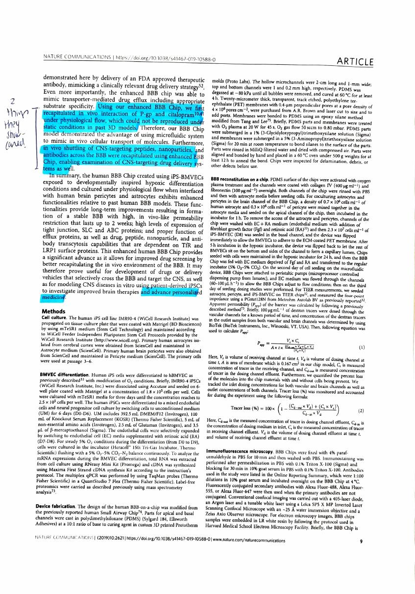

Park et al. 2019
Hypoxia-enhanced Blood-Brain Barrier Chip recapitulates human barrier function and shuttling of drugs and antibodies
Park TE, Mustafaoglu N, Herland A, Hasselkus R, Mannix R, FitzGerald EA, Prantil-Baun R, Watters A, Henry O, Benz M, Sanchez H, McCrea HJ, Goumnerova LC, Song HW, Palecek SP, Shusta E, Ingber DE (2019). Hypoxia-enhanced Blood-Brain Barrier Chip recapitulates human barrier function and shuttling of drugs and antibodies. Nature Communications 10:2621. https://doi.org/10.1038/s41467-019-10588-0. Open Access.
| Field | |
|---|---|
| Year | 2019 |
| Models | Human only. No cross-species comparison. An in vitro two-channel microfluidic Organ Chip: human iPSC-derived brain microvascular endothelial cells (iPS-BMVECs, line IMR90-4) interfaced with primary human brain astrocytes and pericytes |
| Brain region | Not modelled as a region. The chip reconstructs a generic BBB interface rather than a specific region. The primary astrocytes are cerebral cortex derived; the endothelium is iPSC derived and so has no regional identity at all |
| Measures | Function first: TEER (barrier tightness) and apparent permeability (Papp). Plus RNA (qPCR) and protein (mass spectrometry, western blot, immunofluorescence) for markers and transporters |
| Method | Organ-on-a-chip. iPSCs differentiated to BMVECs under hypoxia (5% O2), or with the HIF1α mimetics CoCl2 and DMOG, then seeded on a porous membrane with astrocytes and pericytes on the other side, under continuous flow (100 µL/h, 6 dyne/cm²). Readouts: integrated TEER electrodes, fluorescent tracers, and LC-MS for citalopram |
| Cross-species stats | None, because there is no cross-species comparison. Within the paper: mean ± SE, N = 2 to 3, two-way ANOVA with Tukey’s multiple comparisons test. Comparison to other species is narrative, against published in vivo animal and human findings |
My reading
The model they used was a blood brain barrier chip, in which they generated the blood brain barrier under hypoxic conditions, and they differentiated the brain-like microvascular endothelial cells under hypoxic conditions as well.
Why hypoxia. The blood brain barrier establishes itself under hypoxic conditions in the first place. In the embryo it forms in a low oxygen environment. So if you can replicate the original differentiation state of these pluripotent stem cells, the likelihood is higher that you achieve the barrier phenotype you are after. That is why hypoxia was used, and they explain it in the first paragraph.
For the regions of the brain, they tried to replicate the blood brain barrier itself, including its tight junctions, transporter proteins, astrocytes and pericytes.
What they measured was the osmotic opening. They did two experiments with the blood brain barrier in which they looked at whether they can administer FDA approved cancer drugs, which they were able to do. They also compared their findings with the research literature for in vivo studies in animals and in humans, but they focus more on humans.
Statistics and modelling. What they did was more like trying out the blood brain barrier and seeing how it performs, because it is an artificially generated one. They talk about the duration of the model, which is one week, and how it can be used.
There are two case studies in which they use osmotic opening to look at whether they can administer an FDA approved drug, which they were able to do.
They also assess P-gp activity in the BBB chip by treating the chips with P-gp inhibitors, and they used MS analysis to measure the permeability of citalopram. So there is a connection between P-gp and citalopram.
They also analysed the activities of BCRP and MRP1, where they measured the influx of rhodamine 123 and DiOC2 into the CNS channel. So broadly, you could say they administered different inhibitors to the BBB chip to see what goes through into the CNS and what does not, and whether it works as known in the literature or not.
Then they administered doxorubicin to study brain transporter dependent drug efflux, which worked.
They also recapitulated BBB shuttling activities on chip with Angiopep-2. Angiopep-2 has been used with multiple drugs including paclitaxel and a cancer therapeutic HER2 antibody, which I think is used in breast cancer. They found that Angiopep-2 had a 3.5 fold greater capacity to penetrate into the CNS compared with Q-dots, which was the standard control.
Then they talked about how they were able to open the blood brain barrier on chip and how it regained complete function after about four hours following osmotic opening, in which they used osmotic solutions.
At the end, they are essentially saying that if you want to create these versatile and quite good models of the BBB chip, you either lower oxygen levels or add HIF1α inducing mimetics, in order to enable differentiation of endothelial cells that recapitulate human relevant physiological blood brain barrier properties when the cells interface with human brain astrocytes and pericytes in a two channel microfluidic BBB chip.
They also show that the microfluidics played a part, or were more relevant, for being able to deliver a clinically approved therapeutic, to do an osmotic opening, and to showcase clinically relevant functionalities.
What I take from it
What I felt the focus of this paper was: that you can actually build these BBB chips, and you can test them and try out physiologically well documented processes, and simply showcase that this is possible.
That also answers the regional identity question. Since it is a model, regional identity was not in focus.
The two most important things they did:
- They recapitulated the in vivo interaction of P-gp and citalopram under physiological flow, which could not be reproduced under static conditions in past 3D models. So they are showcasing the advantage of microfluidic systems here, to mimic in vivo cellular transport.
- They showed that in vivo shuttling of CNS targeting peptides, nanoparticles and antibodies across the BBB was recapitulated using the enhanced BBB chip, enabling examination of CNS targeting drug delivery systems as well.
Their overall goal is to advance personalised medicine by building more physiologically and clinically relevant BBB chips that can hold longer, differentiate more, and show more abilities than what they have currently shown.
Checks against the paper
Small corrections and additions from reading the text alongside the notes.
- Paclitaxel and the HER2 antibody are cited background, not experiments in this paper. The paper says the brain-penetrating capacity of multiple drugs, including paclitaxel and a cancer therapeutic HER2 antibody, has been shown to be enhanced when modified with Angiopep-2, citing earlier work. What Park’s group actually tested was Angiopep-2-coated quantum dot nanoparticles, 20 nm, against Q-dots coated with a scrambled peptide. The 3.5 fold figure is theirs.
- The HER2 antibody guess is right. A therapeutic HER2 antibody is trastuzumab, used in HER2-positive breast cancer.
- The FDA approved drug in the osmotic opening experiment is cetuximab, an anti-EGFR therapeutic antibody, flowed alongside a 10 kDa dextran tracer. The paper calls this, to their knowledge, the first demonstration of delivery of a clinically approved antibody drug across the human BBB in vitro by reversible osmotic opening.
- Recovery timing. TEER dropped by about 50% within 2 h of hypertonic mannitol, and both the dextran and the antibody permeability returned to the normal range within 4 h of switching back to isotonic medium. The experiment runs to 4.5 h in total.
- Duration. One week is right for the hypoxia-differentiated chip. With CoCl2 instead of hypoxia, barrier function was sustained for more than two weeks.
- Doxorubicin numbers. Inhibiting P-gp with verapamil produced a 2.7 fold increase in doxorubicin influx into the CNS channel. Inhibiting MRP1 or BCRP did not change it, so P-gp is the pump doing the work for this drug.
- One experiment not in the notes: they also tested two anti-transferrin-receptor antibodies, MEM75 and 13E4, and got about threefold higher penetration of MEM75, which matches what had been predicted in vitro but never reproduced in a human BBB model. This is a second shuttling mechanism alongside Angiopep-2 and LRP1.
- Barrier tightness. The chips reached about 25,000 Ω, roughly two orders of magnitude above BBB chips made with primary human BMVECs at around 400 Ω.
Open questions from this read
- MEM75 and 13E4 differ by pH-dependent binding affinity to the transferrin receptor. Worth understanding properly if antibody shuttling comes up again.
How it relates to this project
To write. Yara is working through the connections to the pipeline separately.
Reference detail from the paper
- Chip: 2-channel PDMS microfluidic device, porous PET membrane (2 µm pores) coated with collagen IV and fibronectin. Astrocytes and pericytes seeded 7:3 on the apical side, iPS-BMVECs on the vascular side. Flow at 100 µL/h giving 6 dyne/cm² shear, medium viscosity 3 to 4 cP.
- Differentiation: iPSCs under 5% O2 from D0, retinoic acid at D6 to D8, seeded on chip at D9, then shifted to normoxia. Hypoxia raised mRNA for VE-cadherin, PECAM-1, GLUT-1, INSR, P-gp, BCRP, MRP1 and MRP4, and Wnt7a by over 25-fold.
- Barrier: impedance about 25,000 Ω under hypoxia differentiation against about 400 Ω for chips with primary human BMVECs. Papp about 10⁻⁸ to 10⁻⁹ cm/s, inversely correlated with tracer size.
- Efflux selectivity: verapamil (P-gp) raised rhodamine 123 and DiOC2 in the CNS channel; Ko143 (BCRP) affected DiOC2 but not rhodamine 123; MK571 (MRP1) affected rhodamine 123 only. Doxorubicin rose 2.7-fold with verapamil and was unchanged by MK571 or Ko143.
- Citalopram: permeability increased when P-gp was inhibited in the chip, matching in vivo animal studies. The paper notes that past in vitro BBB models failed to identify citalopram as a P-gp substrate, and the equivalent Transwell experiment showed no such effect.
- Osmotic opening: 485 mOsmol/L mannitol for 1 h. TEER fell about 50% within 2 h. 10 kDa dextran Papp rose from 3 to 32 × 10⁻⁸ cm/s and cetuximab from 2 to 5.1 × 10⁻⁸ cm/s. Both back to normal within 4 h.
- Shuttling: Angiopep-2-conjugated Q-dots showed about 3.5-fold greater CNS penetration than scrambled-peptide Q-dots, with no change in barrier integrity. Anti-TfR MEM75 showed about threefold higher penetration than 13E4.
Annotated scan
My own printed and annotated pages, scanned back in. Highlighting follows the usual key: the claim, the method, numbers worth quoting, and anything that surprised me.









Pages reproduced from Park et al. 2019, Nature Communications 10:2621, open access under CC BY 4.0. Handwriting and highlighting are mine. Original paper.